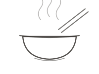

Health & Life
一餐素食，身心皆安
雨花斋倡导环保健康的素食观念。清淡平和的一餐，既是对身体的善待，也是对生命的尊重。
上餐之前，志愿者会为“家人们”介绍素食的好处，讲述中华优秀传统文化。用餐之时，大家秉汤、打饭，鞠躬送上饭菜——寻常的一餐饭，因为敬意而不同。

Care for the Earth
低碳环保，从我做起
倡导健康生活，低碳环保，关爱生命，圆满心灵，和谐社会，保护地球。

低碳 · 环保
以素食减少消耗，以简朴回应自然。一餐一饭的选择，也是对地球温柔的守护。雨花斋把环保健康的理念，落到每一双筷子的日常里。

勤俭 · 光盘
提倡勤俭节约，践行“光盘行动”。吃多少盛多少，不浪费一粒米、一棵菜，让中华传统美德在餐桌上自然传承。
A Place to Learn
传统文化的力行地
雨花斋不仅是一间免费素食餐厅，还是一所社会性的微型学堂。每一位雨花人都享有平等的学习机会。
义工团队承担运营、管理、种植、料理、烹饪、餐食发放与配送，也开展幸福人生讲座、健康养生讲座、传统文化培训。就餐获身体的健康，文化熏习得心灵的健康。

Gratitude
感恩吃素
阳光照进内心，开出感恩之花。
—— 雨花斋 · 和乐家愿每一位来到这里的人，都能在一碗素饭中，找到生活和心灵的家园。
与世界温柔相处
从一餐素食开始，把善意带回日常。